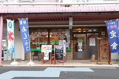

メニュー
ご紹介
こんなことをしています
かんてん茶房は、レストラン業として2002年にオープンし、以来、天然素材の寒天を使った身体に優しい料理を売り物にしながら地域の沢山の皆様方に支持され愛されているお店です。
遊夢のホームページを開設しました
寒天茶房遊夢の紹介を行う一般向けホームページを開設中。皆様ぜひご覧になって下さい。
特徴・方針
当店でお出し致しております料理の特徴と致しましては、店名にもございますように寒天をメインとした、身体に優しいお料理や甘味を提供いたしております。
寒天はノンカロリーで、しかも、植物繊維が何よりも多く含まれ、血糖値や高血圧をも下げ、成人病をも予防すると言われる食材を使ったお料理を通して従業員ひとり一人が安心して働ける環境の中で、接客業としてのノウハウを自分のペースに合わせながら習得することができます。
責任者メッセージ
働く仲間同士が、お互いに協力し合い助け合いながら、遊夢の一員としての自分の仕事に対して誇りを持って頑張ってほしいと思っております。
利用者の声
メンバーがそれぞれの体調やスキルに合わせた仕事ができる場所です。私も入った頃より今ではできる仕事も増え、やりがいを感じています。